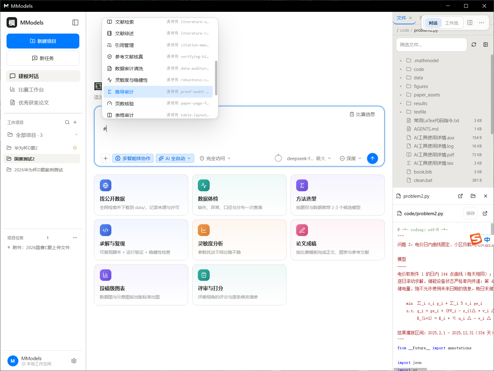
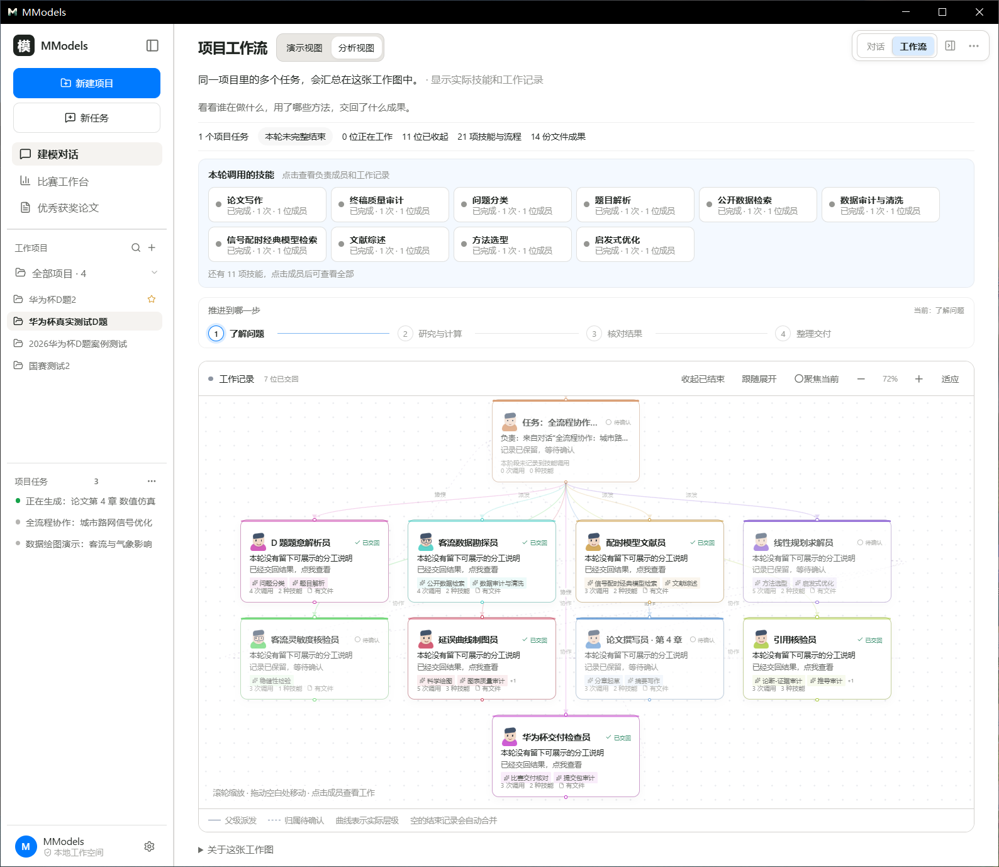
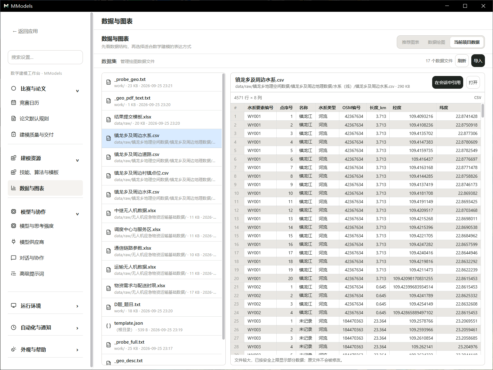
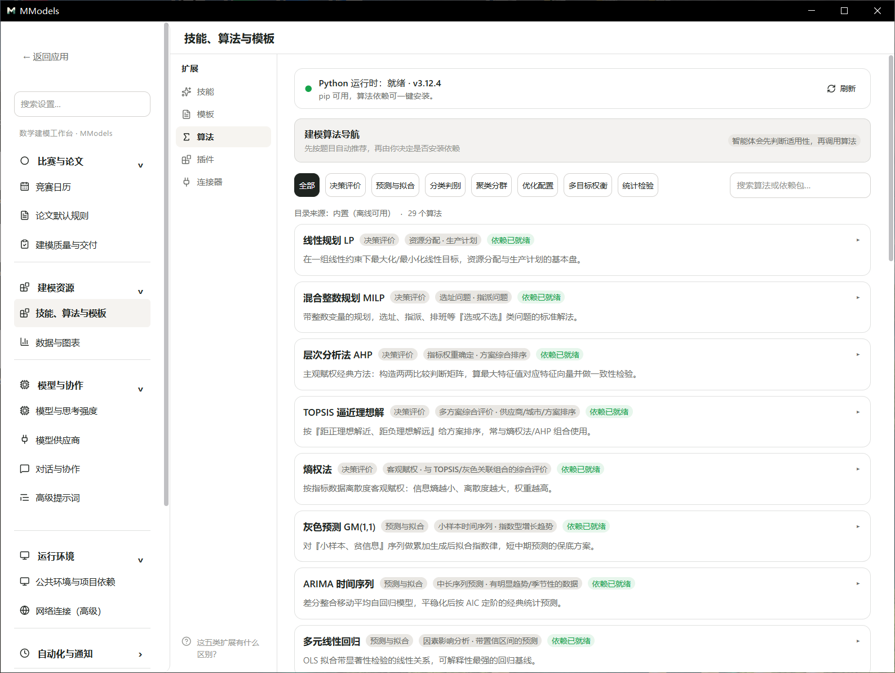
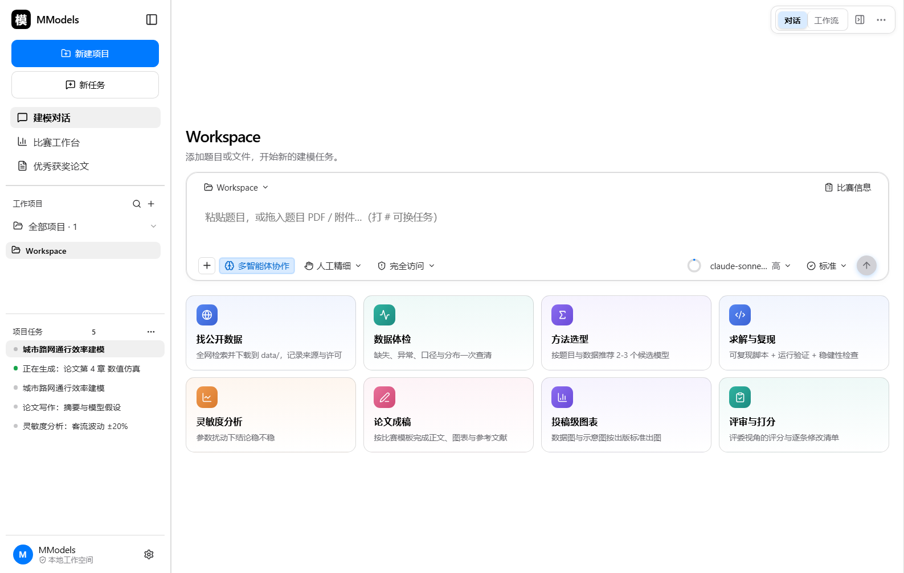

先试基础流程
注册即得 24 小时基础体验和 50 积分；体验后每天 100 对话积分，签到再得 100 分。本地项目、基础 AI、单智能体建模和普通备份可继续使用。
数学建模竞赛桌面工作台 · 面向 Windows 桌面环境
MModels 是面向数学建模竞赛的桌面工作台。软件围绕「一个竞赛项目」组织全部工作：题目、数据、代码、论文、讨论、任务、协作记录集中存放于同一项目空间。基础项目、论文编写、基础图表和本地成品导出可先免费使用；多智能体协作、AI 全自动、云协作和深度建模由卡密 VIP 解锁。以下按功能模块逐项列出。

每个竞赛题目对应一个独立项目。项目内包含会话、文件、数据、论文、任务与协作记录；侧栏顶部提供就地搜索框，可在项目与任务两个层级中检索。


在输入框中键入 # 唤起任务面板，列出当前可执行的全部任务。任务按优先级排列，支持方向键选择与回车确认；选中后任务名称回填至输入框。



对话区提供一组运行参数：模型选择、思考强度、任务深度、决策方式、文件权限。参数在运行中可调整。


复杂任务由主助手拆分后分发给协作成员。每位成员有明确职责，执行过程与交回结果记录在工作流中。


工作流以节点与连线呈现一次协作的完整过程。提供演示视图与分析视图两种视角。



数据绘图模块读取项目内 CSV 数据，选择字段后生成图表，可调整图表类型并导出。


图表库按建模场景分类收录常用图表模板，提供总览视图与单图查看。




论文库集中管理成稿与投稿状态；比赛信息决定页数与格式检查规则；支持将论文分享归档为团队参考资产。


竞赛日历记录各比赛报名时间与截止时间，提供日历与列表两种视图；比赛工作台将交付要求拆为可检查项。


自动化模块按设定时间表触发任务，并记录每次运行的结果与耗时。


编辑器视图将文件树、代码区与贴近右下角的对话框同屏排列，代码区按文件类型提供语法高亮，窗口变宽时面板会跟随调整。

算法库按建模场景收录常用方法；扩展页提供技能、算法、模板三类扩展项。



设置页按工作场景归组，覆盖会员与账号、比赛与论文、建模资源、模型与协作、运行环境、自动化与通知、外观与帮助。每个分区都有简短说明，改完立即生效。


会员边界在软件内提前显示，不把基础能力藏起来：注册后先获得 24 小时基础体验和 50 积分；体验结束后，免费账号每天有 100 对话积分，签到当天再得 100 分。本地项目、文件管理、基础建模、基础图表和普通备份可继续使用。普通消息按 10 分/轮，输入 # 后可从 62 个技能中选择，具体成本在面板和会员中心逐项展示；首页八张建模快捷卡也会直接显示对应技能成本，并沿用同一计费表。多智能体协作、AI 全自动和深度建模，需要用卡密兑换 VIP。
注册即得 24 小时基础体验和 50 积分；体验后每天 100 对话积分，签到再得 100 分。本地项目、基础 AI、单智能体建模和普通备份可继续使用。
卡密兑换可叠加有效期；开放多智能体、AI 全自动、云协作、深度建模和自动化任务。
# 面板显示每项技能的单次成本；论文导出不单独扣分，有效反馈通过审核后奖励 100 积分。
# 面板显示技能成本和余额规则
桌面小模以独立窗口显示陪伴角色，可在外观设置中选择角色形象。


侧栏提供终端标签页，可在项目内直接执行命令，输出实时显示。
